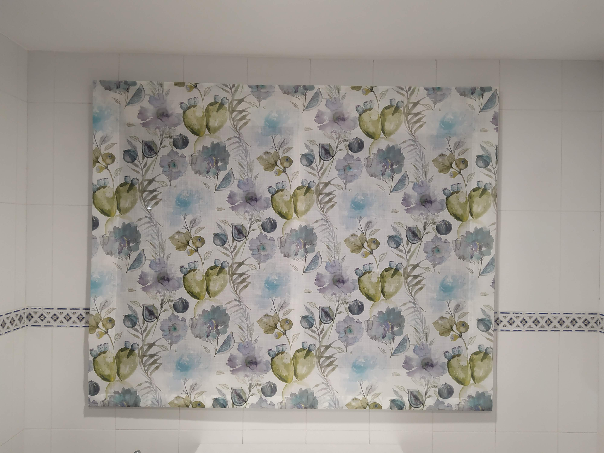
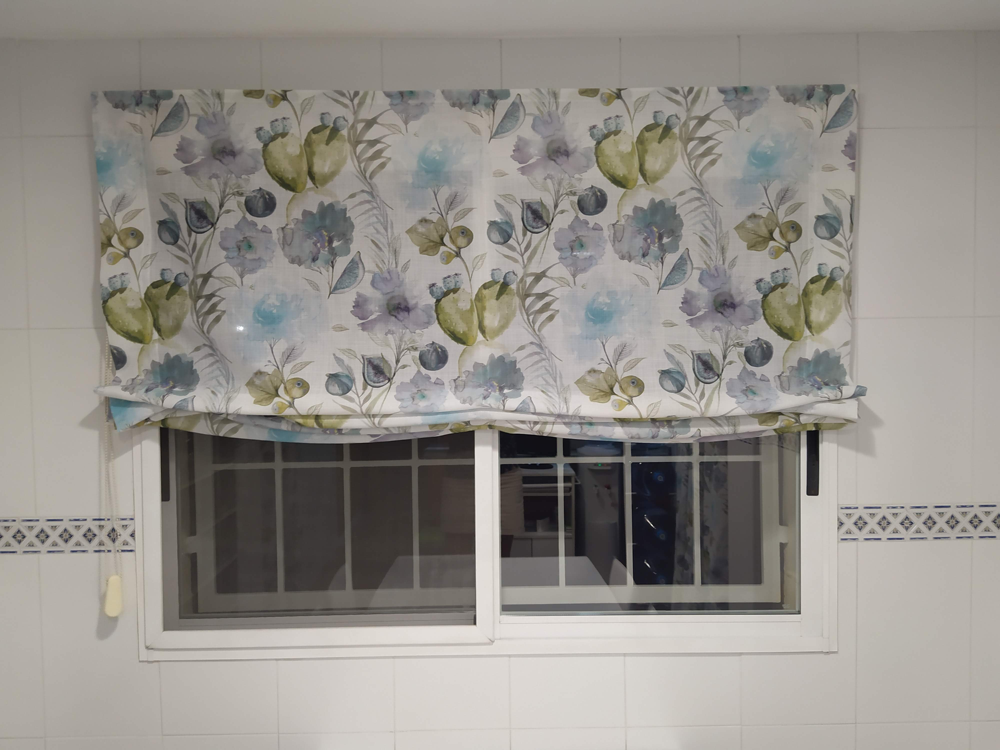

Cortinas tecnicas con impresion digital
Tejidos tecnicos con personalizacion grafica para hogar y negocio.
Sobre el servicio
Las cortinas tecnicas estan pensadas para espacios que necesitan control de luz, privacidad y rendimiento constante en el uso diario. Trabajamos con tejidos screen, opacos y combinados segun la orientacion, el deslumbramiento y el mantenimiento previsto. Tambien incorporamos impresion digital cuando el proyecto requiere una solucion grafica personalizada con acabado preciso.
Como trabajamos
- Analizamos orientacion, incidencia solar directa y nivel de privacidad en obra.
- Definimos tipo de tejido, porcentaje de apertura y sistema de accionamiento para cada estancia.
- Fabricamos cada unidad a medida y preparamos herrajes y puntos de fijacion.
- Instalamos, calibramos y comprobamos alineacion y funcionamiento final.
Galeria



